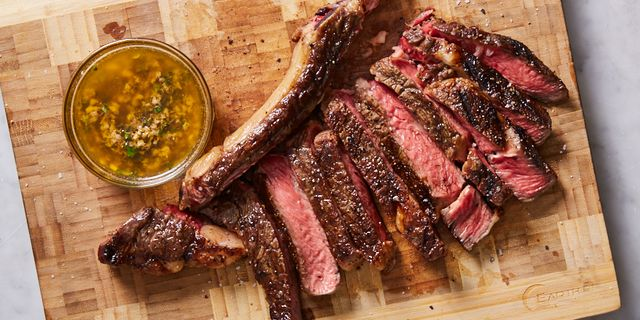

Descroption of the recipe
Great soft pice of meat coocked with heat and a few ingreadients
Ingridients
- Steak
- Salt
- Pepper
- Olive Oil
- Foil Paper
- Garlic
- Rosmarine
- Kindly poore some Olive Oil on your meat
- Let it sit and rest and stay like that for a bit ( a least until you cant wait to eat it anymore )
- Kindly put some salt and Peper on all side of your meat
- Let it sit and rest and stay like thatt for a bit ( the time frame is similiar to number 2
- Put the meant on a heated pre-Heated pan
- Add Garlic
- Add Rosmarine
- Frie on big heat for about 4 minutes each side and maybe a little bit longer if the stake is thic
- put in the Foil paper and wait until needed doneness